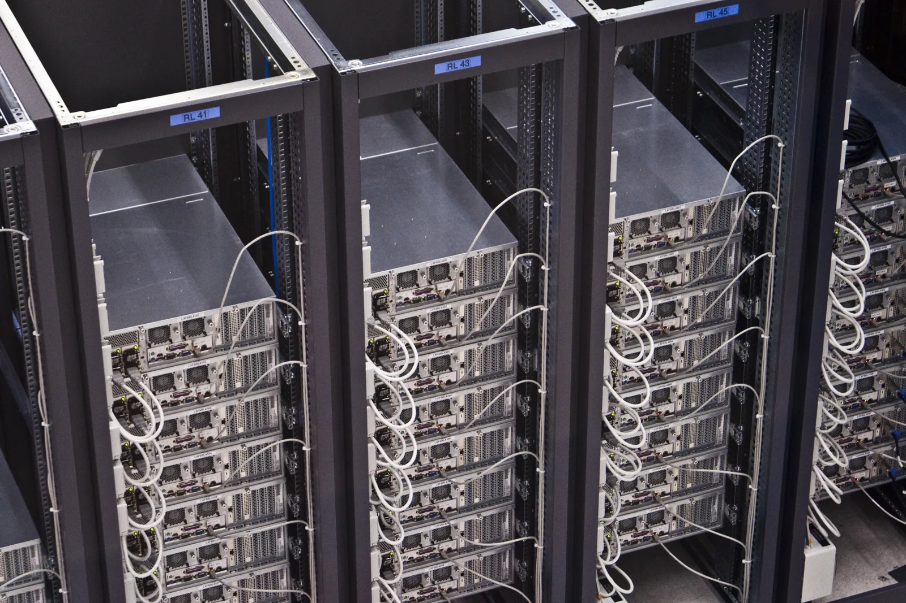
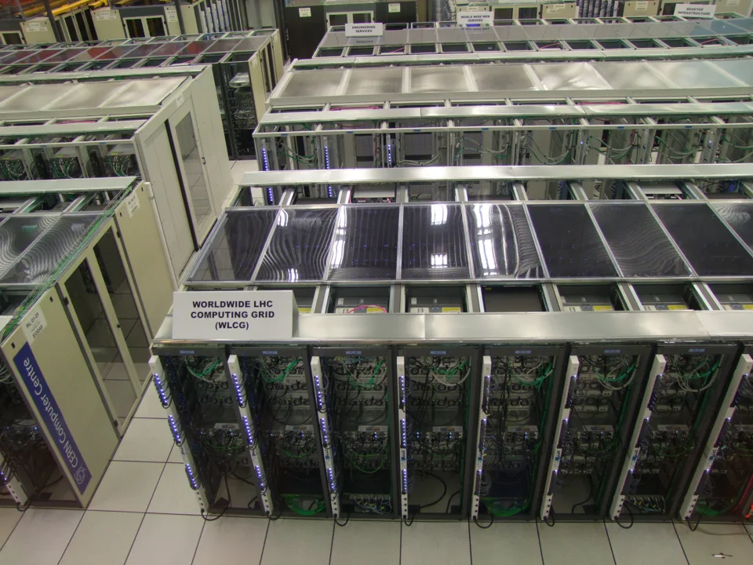

Refrigeração a ar
Ventiladores fazem o ar passar pelos equipamentos e levar o calor para longe. Ventilação e, quando necessário, compressores usam eletricidade. Um sistema que rejeita o calor por via seca pode operar sem evaporar água no local.
Inteligência artificial e meio ambiente
Toda interação com inteligência artificial possui uma pegada física. Descubra a infraestrutura, os recursos e os custos ambientais por trás dessa tecnologia.

Infraestrutura
Da tela ao data center, uma solicitação aciona computadores, redes e sistemas de refrigeração. Selecione uma etapa para explorar o percurso.
Ao enviar uma pergunta a um serviço de IA on-line, seu dispositivo transmite os dados pela internet a um data center, uma instalação que reúne servidores, equipamentos de rede, alimentação elétrica e refrigeração.
Refrigeração e água
Os servidores liberam calor enquanto operam. A instalação precisa transportar esse calor para fora, e a forma de fazer isso afeta o uso de água e eletricidade.
Ventiladores fazem o ar passar pelos equipamentos e levar o calor para longe. Ventilação e, quando necessário, compressores usam eletricidade. Um sistema que rejeita o calor por via seca pode operar sem evaporar água no local.
Ao evaporar, a água absorve calor. Em condições favoráveis, essa técnica pode reduzir a demanda de refrigeração mecânica e economizar eletricidade. A água evaporada precisa ser reposta.
Na refrigeração líquida direta ao chip, um fluido circula por placas em contato térmico com os processadores. O calor ainda precisa sair da instalação, e esse último passo pode ou não recorrer à evaporação.
O balanço depende do clima, do projeto, da disponibilidade de água e da matriz elétrica da região.
Empresas de IA
OpenAI, Google e Microsoft divulgam informações sobre seus projetos em recortes diferentes. Uma instalação ajuda a entender as escolhas locais; os relatórios corporativos descrevem operações mais amplas.

Expande a capacidade computacional com parceiros, como a Oracle no projeto Stargate. Em Abilene, no Texas, a OpenAI descreve refrigeração em circuito fechado e planejamento de energia com parceiros locais. As fontes consultadas não informam o consumo total de água nem o uso anual de eletricidade da unidade.
Infraestrutura e projeto de AbileneOpera uma rede global de centros de dados para seus serviços e para a nuvem. Em The Dalles, no Oregon, usa refrigeração com água e avalia os riscos da bacia hidrográfica. O relatório ambiental apresenta dados de água por instalação e indicadores de energia no escopo corporativo, que inclui atividades além da IA.
Relatório ambiental de 2026Opera infraestrutura de nuvem e IA que sustenta o Azure. Mount Pleasant, em Wisconsin, foi anunciado para testar um projeto de refrigeração de chips sem evaporação de água. A Microsoft publica indicadores de eficiência de energia e água para instalações próprias elegíveis. Esses indicadores agregados não medem o consumo da unidade de Mount Pleasant.
Projeto de refrigeração · Indicadores da frotaCalculadora didática
Compare seu padrão de uso com quatro perfis fictícios. O índice EcoCompute expressa carga computacional relativa em uma escala ilustrativa, sem equivalência em energia ou água.
Preencha o formulário para ver como seu índice se compara aos perfis abaixo.
Metodologia e fontes
Os perfis foram criados para representar padrões diferentes de frequência e complexidade. Suas proporções e frequências são escolhas didáticas, sem origem em médias estatísticas.
Índice do período = interações por dia × dias × carga média
A carga média soma as proporções de cada tipo de tarefa multiplicadas pelos pesos 1, 2 e 4. Semana, mês e ano correspondem a 7, 30 e 365 dias.
| Opção | Simples | Moderadas | Complexas |
|---|---|---|---|
| Simples | 80% | 15% | 5% |
| Variada | 40% | 40% | 20% |
| Complexa | 15% | 35% | 50% |
O gasto físico de uma solicitação depende do modelo, do tamanho da resposta, dos equipamentos, da forma como os servidores compartilham recursos e do local de operação. O clima, o sistema de refrigeração e a matriz elétrica também influenciam o impacto. Os pesos do índice permitem comparar hábitos em sala de aula. Para medir energia ou água, seriam necessários dados operacionais e uma metodologia própria.